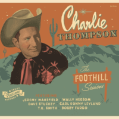

Charlie Thompson - The Foothill Sessions (Album, 2015)
01 - Goin' Like Wildfire (2:34)
02 - The Automobile Song (2:23)
03 - A Blue Million Tears (2:35)
04 - Boogie Blues (2:37)
05 - We're Buggin' Out (2:34)
06 - I Don't Care (2:41)
07 - Let Me Love You Just A Little (2:44)
08 - So Long (2:41)
09 - You Tried To Ruin My Name (2:20)
10 - Ain't Never Gonna (2:27)
11 - (We've Reached) The Beginning Of The End (2:57)
12 - I Miss You Already (2:32)
© Fairlane Records :: [0001]
Notes
United Kingdom.
Featuring Jeremy Wakefield, Wally Hersom, Dave Stuckey, Carl Sonny Leyland, T.K. Smith, Bobby Furgo
Recorded at Wallyphonic Studios
Mastered and recorded by Wally Hersom
Design and artwork by Chris Wilkinson
Charlie Thompson - Vocals, Acoustic guitar
Jeremy Wakefield - Steel Guitar, Vocals
Wally Hersom - Bass
T.K. Smith - Electric guitar
Dave Stuckey - Drums, Vocals, Rhythm guitar
Carl Sonny Leyland - Piano
Bobby Furgo - Fiddle
reference information: Discogs®
Review
114/366 (Project 366)
Amazing authentically flavoured Rockabilly. Very Country music with touch of Hillbilly.